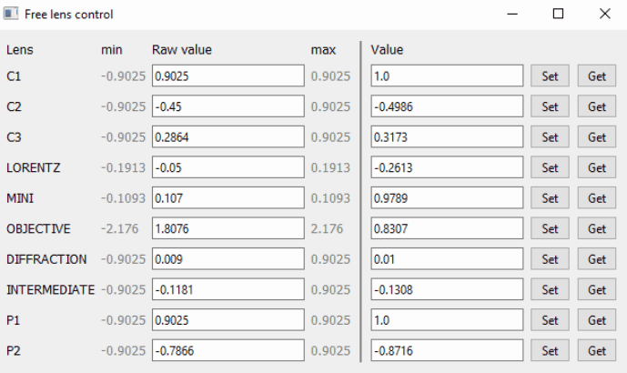

Opens a pop-up window used to control lenses in Free Control mode. Requires the Free Control feature license.
show_free_lens_control(microscope)| microscope | TemMicroscopeClient | a connected microscope client |

The following example shows how to open the free lens control window:
# Create a client and connect
microscope = TemMicroscopeClient()
microscope.connect()
# Open the free lens control window
ui_toolkit.show_free_lens_control(microscope)